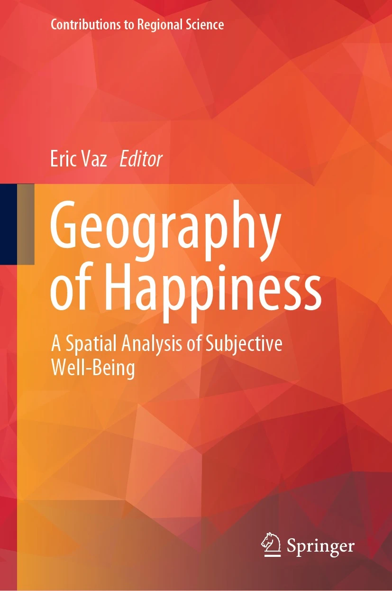
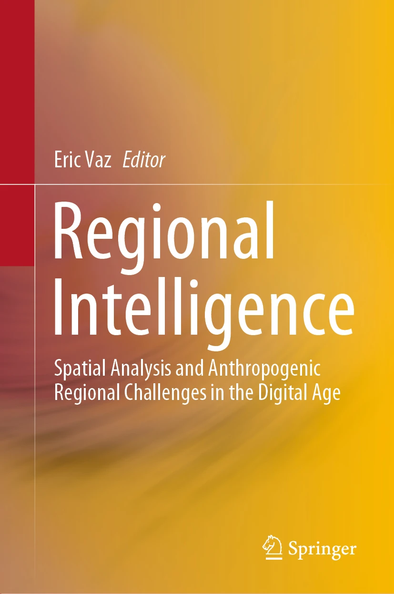
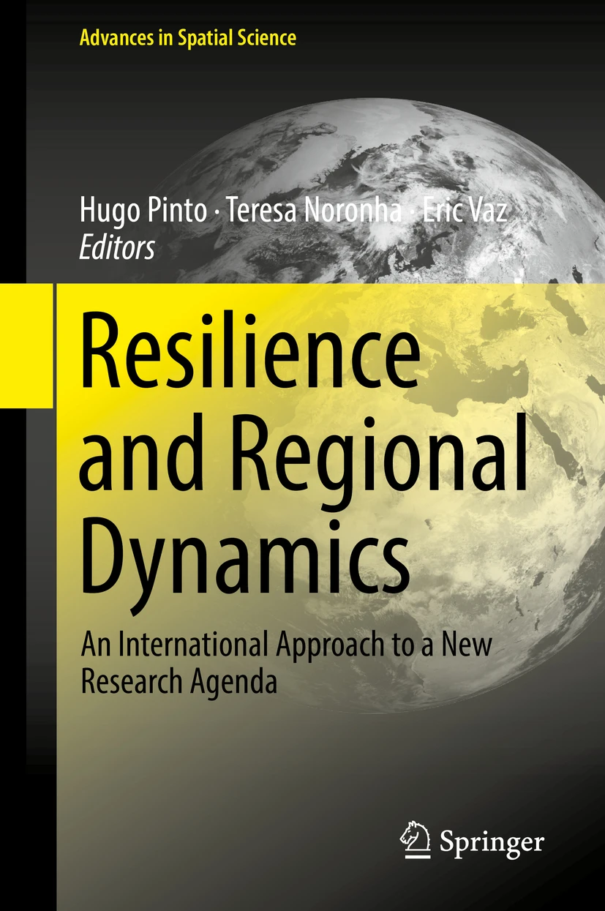

2026
Review · Transactions in GIS
The research record of the Collective's members, drawn from OpenAlex and matched to each member by ORCID. Every member's own record is one click away, and the work fellows have written together is listed in full.
Source: OpenAlex, matched to each member by ORCID · updated 23 November 2026.
Each member is matched to OpenAlex through their ORCID rather than by name, which keeps most namesakes out; OpenAlex can still attribute a work to the wrong person, so the figures are close estimates rather than exact counts. A work counts once however many members wrote it: duplicates are folded together by OpenAlex identifier, DOI, and title. The totals include journal articles, reviews, books, book chapters, and conference papers, and leave out preprints, editorials, errata, front matter, and whole proceedings volumes. Together these 3,908 publications have been cited 178,358 times in OpenAlex; one citing paper can cite several of them, so this is not a count of distinct citing works.
The totals describe the work members bring to the Collective across their careers, much of it written before the Collective existed. Works by two or more fellows include collaborations from before the Collective was founded. No collective h-index is given, and no member is ranked against another; individual metrics are on each member's own profiles. The record is refreshed monthly, and members can correct or withdraw their records by writing to Eric Vaz.
Written together · 85 works
No works match.
Members' records
Ric Young and Teagan Soni and Anastasiia Smirnova are not yet indexed.
Founding director's record · 80 entries
Curated by Eric Vaz from his own record. Citation figures from Google Scholar.
No publications match that filter.
Springer volumes by Eric Vaz




